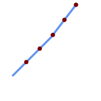

Name
ST_LineInterpolatePoints — ラインに沿って、割合で示された複数の位置の補間ポイントを返します。
Synopsis
geometry ST_LineInterpolatePoints(geometry a_linestring, float8 a_fraction, boolean repeat);
geography ST_LineInterpolatePoints(geography a_linestring, float8 a_fraction, boolean use_spheroid = true, boolean repeat = true);
説明
ラインに沿った割合による間隔にある一つ以上の補間ポイントを返します。一つ目の引数はLINESTRINGでなければなりません。二つ目の引数はfloat8型の0から1の間の値でなければなりません。この値はライン長に対するポイント間隔の割合を示します。三つ目の引数がFALSEの場合には、一つ以下のポイントが構築されます (ST_LineInterpolatePointと同じです)。
結果が0以上のポイントを持つ場合にはPOINTが返ります。二つ以上のポイントを持つ場合にはMULTIPOINTが返ります。
Availability: 2.5.0
 この関数は3次元に対応し、Z値を削除しません。
この関数は3次元に対応し、Z値を削除しません。
この関数はM値に対応します。
例

20%刻みで補間されたポイントを持つラインストリング
--Return points each 20% along a 2D line
SELECT ST_AsText(ST_LineInterpolatePoints('LINESTRING(25 50, 100 125, 150 190)', 0.20))
----------------
MULTIPOINT((51.5974135047432 76.5974135047432),(78.1948270094864 103.194827009486),(104.132163186446 130.37181214238),(127.066081593223 160.18590607119),(150 190))